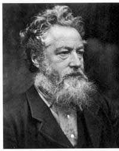
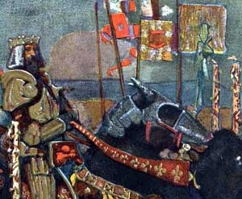
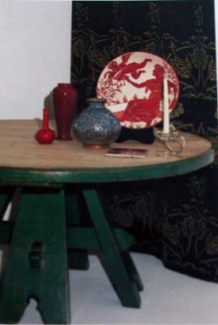

One of the earliest examples of the revival style which preceded the Arts and Crafts movement was the Medieval Court at the Great Exhibition in London in 1851. Devoted entirely to the thirteenth and fourteenth centuries, the Medieval Court exhibition featured embroidery, stained glass, painted tiles, silver and gilt vessels, iron work, screens and lamps. Designed almost entirely by Augustus Pugin, the exhibition was described by the London Illustrator as 'suggesting the fullness of beauty and character, ... of medieval design'.
By the next exhibition in 1862, the exhibits of a new company, Morris, Marshall and Faulkner & Co, were included but were not particularly welcomed, according to Building News:
Their works are almost perfect, their hangings, their music stand, their sofa, their chests would all suit a family which might suddenly be awakened after a sleep of four centuries, and which was content to pay enormous prices suitably to furnish a barn...but they are no more adapted to the wants of living men than medieval armour would be to modern warfare...
The firm of Morris, Marshall and Faulkner & Co, described by Peter Davey, author of Arts and Crafts Architecture as 'the furnishing wing of the Pre Raphaelite Movement', was established by William Morris in London in 1861, and was to have a powerful effect on design for the rest of the century, an effect which continued through the next century and is still felt today.
William Morris and his associates were inspired by Ruskin, and Morris himself was a keen exponent of the gothic style and spirit. His political contribution as a socialist pioneer, and his leadership of the Arts and Crafts movement were of enormous significance, and readers should consult one the several biographies of Morris, and perhaps browse the William Morris Society website to learn more. If you are in London you can also visit the William Morris gallery in Walthamstow. Of the many books on Morris, the latest by Fiona McCarthy is particularly good, well detailed and worth reading for those who wish to understand Morris himself and the appreciate the importance of work.
Back to the Golden Age
William Morris was born into a wealthy family who for some time lived at Woodford Hall, on the edge of Epping Forrest, 'a world which had not changed greatly for hundreds of years'. Peter Davey,( see Reading) relates how the young Morris rode his pony through the forest, sometimes clad in a specially made suit of armour and creates an image of an idyllic and almost medieval lifestyle for the young Morris. The painting by Gerald Moira opposite shows a romantic vision of the medieval age.

Morris's love of medieval beauty was fostered during his time at Oxford, which in many respects had changed little since the fifteenth century. Morris trained as an architect in the Gothic studio of George Street, and then as an artist with the Pre-Raphaelites. When, in 1857, he needed furniture to furnish his own studio in London it occurred to him that to paint elevating pictures one must live in congenial surroundings with decent furniture. As nothing was available that would satisfy his aspirations, he decided that he must make it himself. His designs were made up by a local carpenter and then decorated by the Pre-Raphaelite painters, his friends Rossetti and Burne -Jones. Thus the first Arts and Crafts furniture was born.
Two years later, Morris asked Philip Webb, his friend and colleague to design a house for himself and his new wife Jane. Webb agreed, and designed Red House, named because of its red brick and tile construction in Gothic style which was built in Bexley Heath in Kent. In building the house, every brick and tile was carefully selected and placed to give variation of colour and to avoid the impression of any mechanical uniformity. The interior design included murals by Burne-Jones and Rossetti and massive furniture designed by Webb and by Morris. The Red House perhaps the best known building associated with the Arts and Crafts movement and appears in virtually every book relating to Arts and Crafts. See our page on the Red House.
Art and craft in partnership.
For Morris, artist and craftsman were equal in importance. In the middle ages the artist was a craftsman who carried out whatever work was commissioned from him. Morris having trained as an architect and then as an artist believed that both artist and craftsman had an equally important role to play. In his view, art had no special or higher sense of importance. He defined art as ' the expression by man of his joy in labour', ' real art must be made by the people for the people as a happiness for the maker and the user'. In Morris 's time the artist was credited with some special inspiration and genius. Morris said, '' All that talk of inspiration is sheer nonsense. There is no such thing; it is a mere matter of craftsmanship.' In his own words:
I don't want art for a few, any more than education for a few or freedom for a few...What business have we with art unless we can all share it?

Morris became a leading exponent of the medieval and Gothic revival and a guiding light for the Arts and Crafts movement through his writings, his lectures and public speaking, but also, most importantly through the things he created. His firm of Morris, Marshall and Faulkner & Co produced furniture and furnishings, stained glass, wallpaper and textiles, some of which was exhibited at the Great Exhibition of 1862 . Designers for Morris and Company included Philip Webb, and Pre Raphaelite painters Dante Gabriel Rossetti, Edward Burne Jones and Ford Maddox Brown.
Collectors of William Morris items will know that furniture and textiles made by Morris & Co do come up for sale occasionally, individual chairs from the Sussex range being the most common find though there are also samples of wall paper, fabric,and tiles which can be purchased.